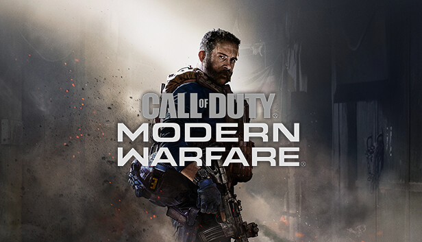
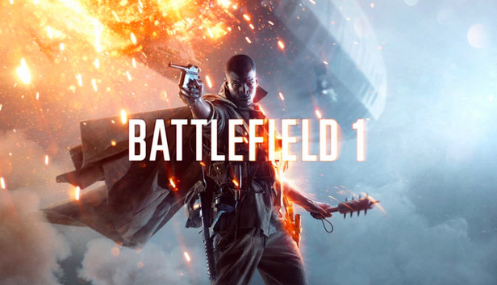
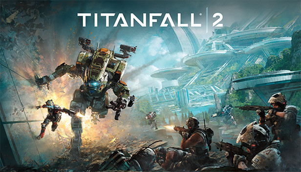
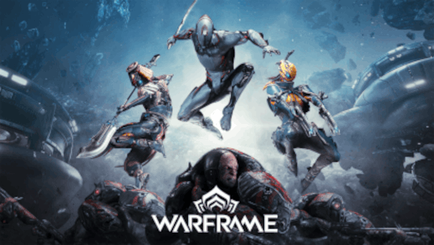
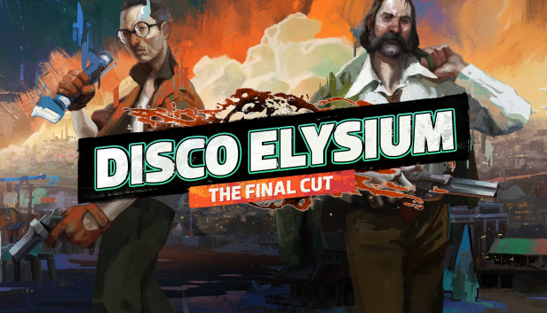
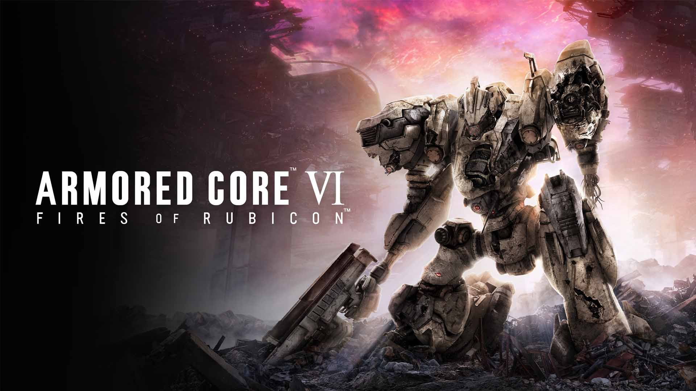
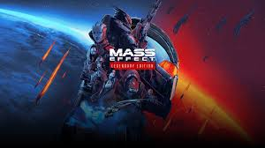
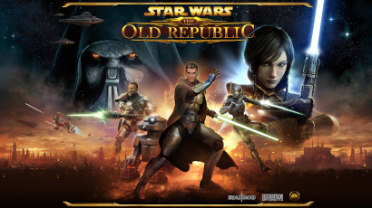
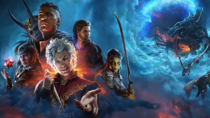

PELI RAKETIN TOP 10 PELIT
Author: Eetu P
Tämä lista on minun oma Top 10 lista minun omista lempi peleistäni. Lista on ei ole mikään täysin objektiivisesti oikea ja on täysin tehty omien mielipiteideni ja peli kokemuksieni pohjalta tehty lista.
DISCLAIMER: lista on pääasiassa täynnä räiskintä pelejä ja muita toiminnallisia seikkailuita joten, jos pidät enemmän rennommista ja rauhallisimmista peleistä tämä lista ei välttämättä ole juuri sinun mieleesi. Mutta kaikki joita vauhti ja vaaralliset tilanteet kiinostaa ottakkaa hyvä asento ja syvenny lempipelieni listan ääreen.
lista
- 10. Call of Duty: Modern Warfare
- 9. Battlefield 1
- 8. Titanfall 2
- 7. Warframe
- 6. Disco Elysium
- 5. Armored Core 6: Fires of Rubicon
- 4. Mass Effect
- 3. Clair Obscur: Expedition 33
- 2. SWTOR
- 1. Baldur's Gate 3
10. Call of Duty: Modern Warfare (2019) - Bravo 6, menee pimeäksi

Call of Duty on aina ollut räiskintäpelien klassikko oli pelisarjan nykyisestä tilanteesta mitä mieltä hyvänsä. Modern Warfare (2019) oli kuitenkin oma henkilökohatinen lemppari ja siihen peliin on kadonnut yli tuhat tuntia elämästäni.
Modern Warfare (2019) eroaa Call of Duty muista peleistä sillä, että se yrittää olla hieman "realistisempi" ja "totisempi" pelisarjan muista osista. Se on myös pelisarjan ensimmäinen peli, joka käytti gunsmith systeemiä, joka antoi pelaajille täysin uuden vapauden lisätä vapaavalintaisesti eri osia aseisiin. Modern Warfare ei ole mikään maailman mullistavin teos, mutta ei jokaisen tarvitse olla. Joskus on ihan kiva vaan lyödä aivot narikkaan ja mätkiä muita pelaajia moninpelissä.
9. Battlefield 1 (2016) - Sota lopetaakseen kaikki sodat

Battlefield-pelisarja on hyvin tunnet suurista "combined arms" moninpeli taisteluista, jossa peltaan 32vs32 taisteluita jalkaväkenä, tankkeina ja hävittäjinä. Niin Battlefieldissä kuin muissa räiskintäpeleissä on käyty historiallisia taisteluita toisesta maailmansodasta nykypäivään ja aina kauas tulevaisuuteen, ensimmäinen maailmansota on jäännyt usein varjoon, ja melkein jopa syystäkin. En usko että montaa ihmistä kiinostaisi juoksuhaudassa nääntymis simulaattori, jossa aina silloin tällöin koitetaan juosta täysin avointa maastoa pitkin kohti vihollisen konekivääriä. Pelistudio DICE kuitenkin osasi yhdistää juuri oikean verran historiallista tarkkuutta ja videopelien fantasiaa tehdäkseen Battlefield 1:stä synkän ja tunnelmallisen, mutta pelillisesti hauskan ja vauhdikkaan.
Se mikä erottaa Battlefield 1:en sarjan muista peleistä on pelin tunnelma ja historiallisuus. Pelin maisemat, musiikki ja ääninäyttely saavat pelaajan eläytymään siihen fiiliksen että sota on täyttä helvettiä, kun kranaatin heittimet ulvovat ilmassa, haavoittunut sotilas huutaa suu veressä ja komentaja puhaltaa pilliin syöksyn merkiksi. Ensimmäisessä maailmansodassa ei ollut käytössä hirveästi toisistaan eroavia aseita, mutta sodan aikana oli monenlaisia eri prototyyppi aseita ja vekottimia mitkä eivät lopulta nähneet päivän valoa, mutta Battlefieldissä pääsee näkemään "mitä jos tämä ase olisikin valmistettu tai miltä tämä ase olisi vaikuttanut". Peli myös kertoo itse aseiden ja taisteluiden historiasta. Battlefield 1 ei ole ehkä historiallisesti tarkin peli, mutta se tietää ettei sen tarvitsekaan olla.
8. Titanfall 2 (2016) - Robotti on miehen paras ystävä

Titanfall yhdistää tuttavan Call of Duty tyypisen räiskinnän nopealla liikumisnopeudella, seinäjuoksulla ja tuplahypyillä sekä sekoittaa siihen viellä hidastempoisemman, mutta taktisemman titaaneilla taistelemisen.
2010 vanhat Call of Duty pelisarjan konkarit Jason West ja Vince Zampella (Rest in Peace) saivat potkut Infinity Wardista, monen muun studion tyntekijän kanssa. Tämän seurauksena Zampella ja West päättivät perustaa uuden pelistudion "Respawn Entertainment". Vuonna 2014 Respawn julkaisi ensimmäisen pelinsä "Titanfall", joka oli ihan kelpo peli, mutta 2016 Titanfall 2 tuli ja oli melkein jokaisessa osa-alueessa edeltäjäänsä parempi. Nopemapi ja sulavampi liikkuminen, yksinpeli kampanija, enemmän aseita, jne.
Titanfall 2:n moninpeli tarjoaa nopeatempoista ja adrenaliinin täyteistä räiskintää, kun vastakkaisten tiimien "pilootit" lentävät ilman halki hyppyrepuillaan ja kiitävät ympyrää seiniä pitkin yrittäessään osua viholliseen, kunnes joku kutsuu taistelukentälle titaanin. Silloin peli muuttuu kissa ja hiiri leikiksi pilootien ja titaanin välillä, mutta sen sijaan että hiiri olisi täysin aseeton, siltä löytyy sinko selästä. Siinä vaiheessa kun molemmilla tiimeillä löytyy titaaneja kentällä, muuttuu peli maltillisemmaksi, kun jättiläiset koittavat osua toisiinsa raketeilla ja laasereillaan. Kaikilla titaaneilla on myös omat puollustus keinonsa joilla hei voivat pienentää välimatkaa tai perutaa kauemmas tarvittaessa.
Yksinpeli kampanijaa ei kuitenkaan kannata unohtaa. Ttanfall 2:n tarina seuraa Jack Cooperin ja BT-7274:n odottamatonta tehtävää, robotin ja ihmisen on opittava toimimaan yhtenä selvitäkseen jouduttuaan vihollislinjan taakse. Yksinpeli kampanija on lyhyt, mutta saa pelaajan nopeasti tykästymään robottiin tämän lyhyen ajan sisällä.
7. Warframe (2013) - Ninjoja? Avaruudessa?

Millainen peli Warframe on? Se on... vaikea selittää. Tähän kysymykseen edes peli kehitänyt studio Digital Extremes ei ole osannut vastata. Warframe pelissä pelataan "Warframe" hahmoilla erillaisissa tehtävissä: Capture, Survival, Exterminate, Rescue ja taistelaan eri vihollisia vastaan kuten Corpus: rahaa palvova kultti, Grineer, planeettoja valtaavat kloonit ja Infestation, pieleen mennyt bio-ase. Käytettävissä on monia eri Warframeja ja lähes tuhanisa eri aseita. Tehtäviä tehdessä myös koitetaan selvittää ketä me olemme? Miksi me taistelemme? Ja mikä uhka kaiken takana piilee? Mutta mitä minä pelistä tiedän, että se osaa olla hyvin addiktoivaa. Nopea parkouri, tyydyttävältä tuntuvat aseet ja uusien asioiden löytäminen ja saaminen tekee pelistä loistavan. Ja ainiin, se on täysin ilmainen.
6. Disco Elysium (2019) - Disco poliisi ja maailmanlopun kännit

Oletko vetänyt, koskaan vetänyt niin kovat kännit, että herätessäsi olet unohtanut kuka olet, missä olet ja millainen ympärillä maailma on? En ole minäkään... mutta Disco Elysiumin päähahmo Harry on. Virolaisen pelistudion ZA/UM:in ensimmäinen peli Disco Elysium on murha myysteeri missä, muistinsa menettänyt oleva pelaajan hahmo pyrkii selvittämään murhamysteeriä etsivä parinsa Kim Kitsuragin kanssa ja samalla pyrkii uudelleen oppimaan kaiken ympärillä olevasta maailmasta ja menneisyydestään.
Pelissä pelaaja oppii Harryn kanssa yhtä aikaa uusia asioita Discon maailmasta ja rakentaa Harryn uutta identiteettiä muistinmenetyksen jälkeen. Harry ei ole kaikista tervejärkisin henkilö, ja tekee välillä holtittomia ja erikoisia asioita pelajaan valinnoista huolimatta, mutta etsivä Kim pyrkii tomimaan pelaajan ja Harryn järjen äänenä. Harry ja Kim eivät kuitenkaan ole selvittämässä murhaa kahdestaan, sillä Harryn pääsisäiset äänet auttavat häntä mysteerin jokaisessa, vaiheessa. Pelin kuviteellinen maailma "Revachol" on täynnä erillaisia ihmisiä, joilla on monia erillaisia poliittisia mielipiteitä jättävät Harryyn suuren jäljen, mutta se on pelaajan käsissä mitä poliittista suuntaa Harry edustaa.
Disco Elysium on kieliposkessa tehty peli, joka tekee pilaa kaikista poliittisista asioista ja stereotyypeistä, mutta samaan aikaan käsittelee syviä, vaikeita ja arkisia aiheita. Pelin tarkostus ei ole ottaa poliitista kantaa mihinkään asiaan, muttaa antaa pientä kritiikkiä kaikista asioista ja nauraa niiden huvittavuudelle. Elämä ei aina ole helppoa tai hauskaa, joten on otettava ilo irti pienistä arjen asioista ja antaa menneiden asioiden olla.
5. Armored Core 6: Fires of Rubicon (2023) - Palkkasotilas Varis ja Walter

Tykkäätkö jättimäisistä roboteista? Eepisistä kaksintaisteluista? Tykkätkkö Sotarikoksista? Hienoa, silloin tämä peli on juuri sinulle! FromSoftwaren Armored core 6: Fires of Rubicon sijoituu tulevaisuuteen, jossa jätti yritykset johtavat maailmaa... tai mitä maailmasta on jäljellä ja sotivat toisiansa vastaan jättimäisillä roboteilla "Armored coreilla" kaikista jäljellä olevista resurseista maassa, kuin muilla planeetoilla.
Pelissä pelaat C4-621 nimisenä Armored core piloottina, joka työskenytelee mystiselle Handler Walterille saadakseen elämänsä takaisin. Saavut laittomana palkkasotilaana kauan karanteenissa ollelle planeetalle: "Rubiconille", jossa suur yritykset ovat jahtaamassa harvinaista ja voimakasta polttoainetta: "Coralia". Walter pistää C4-621 tekemään töitä aina parhaiten maksavalle osapuollelle saadakseen koko ajan vaikeampia ja parempia keikkoja. C4-621 saa keikoillaan monia eri lempinimiä: Raven, Red-13, Buddy, Tourist ja kohtaa monia muita pilootteja, joden rinnalla ja vastaan C4-621 taistelee. Kysmykset kuitenkin vain kasvavat, kun coralli räjähdyksen jälkeen C4-621 alkaa kuulemaan äänen päänsä sisällä.
Armored coren synkkä maailma ja eepiset taistelut, tekevät pelistä erittäin kiinostavan, jossa on yllättävän paljon tarinaa ja yllättävän syvät hahmot, vaikka yhdenkään henkilön naamaa ei pelin aikana näy.
4. Mass Effect: Legendary Edition (2021) - Hei olen Komentaja Shepard ja tämä on lempi pelisarjani Citadelissa

Bioware pelisstudio on tehnyt pitkään roolipelejä vuodesta 1995 alkaen, kuten Baldur's Gate 1 ja 2, Star Wars: Knights of the Old Republic ja Neverwinter, mutta kaikki Biowaren pelit olivat tähän mennessä olleet jo olemassa olevien IP:en pelejä. 2005 Bioware julkaisi ensimmäisen oman IP:n pelin "Jade Empire", mutta Biowarella työskentelevä Casey Hudson oli haaveillut omasta Sci-fi pelistä. Joten hän suunniteli tiiminsä kanssa Mass effectin maailman ja päättivät tehdä siitä trilogian ennen kuin edes ensimmäinen peli oli julkaistu. Mass effect julkaistiin 2007, joka sai tarpeeksi hyvät arvostelut että Hudson pääsi toteuttamaan unelmassa ja Mass effect 2 näki päivän valon 2010 Mass effect kolme puski itsensä paineen alaisena ulos 2012. Useita vuosia myöhemmin tämä paketti puristettiin yhteen Mass effect: Legendary editioniksi.
Toisin kuin monessa muussa Sci-fi sarjassa Mass effectissä ihmiskunta ei löydä tietään tähtiin omin avuin, vaan löytävät Marssista aikaisemman siviilisaation jättämät pohjapiirustukset Mass effect generaattorille, joka mahdollistaa alivalonnopeus matkustuksen ja Mass effect relayden avulla matkustuksen eri aurinkokuntiin. Mutta ihmiskunta ei ollut ensimmäinen, joka tätä teknologiaa oli saavuttanut. Sillä aikaa kun ihmiset kiersivät Maapalloa uset muut Linnunradan lajit olivat matkustaneet jo useita valovuosia ympäri galaksia, sotineet ja tehneet liittoutumia. Ihmiskunnan ensimmäinen törmääminen muihin lajeihin ei ollut mikään rauhanomaisin, mutta pientenkahakoiden jälkeen ihmiskunta hyväksyttiin osaksi, muita lajeja ja olivat tervetulleita mystiselle, vanhalle ja jättimäiselle avaruusasemalle Citadelille.
Mass effect trilogiassa pelaaja otta komentaja Shepardin roolin, jonka tehtävä alkaa normaalilla tehtävällä yrittää parantaa välejä muiden lajien kanssa ja ansaita ihmiskunnalle paikka lajien väliseen neuvostoon. Tehtävä muuttuu kuitenkin nopeasti, kun Shepard kohtaa erikoiselta avruusalukselta näyttävän olion Reaperin, joka uhkaa tuhota kaikki liittoutuneet lajit sukupuuttoon. Shepardin ja Pelaajan tehtäväksi tulee kolmen pelin aikana todistaa reaperien olemassa olo, tehdä yhteistyötä muiden lajien kanssa, kerätä kasaan luotettava iskuryhmä, sovittaa lajien väliset riidat ja saada kaikki yhteistyöhön yhteistä ja ylivoimaista vihollista vastaan.
3. Clair Obscur: Expedition 33 (2025) - Patonkia, Baretteja ja kyyneleitä kankaalla

Nykyiset jättiläis peliyritykset pysyvät lähes koko ajan tutuissa ja turvallisissa peli sarjoissa, tunkevat ne täyteen lisämaksullista krääsää, eivät anna pelin kehitys tiimille minkäänlaisia taiteellisia vapauksia ja kun pelin tuotot eivät ylitä osake omistajien odotuksia antavat he puolelle pelin koodajista potkut. Mutta mitä tapahtuu kun tällaisen firman työntekijä sanoo itsensä irti ja perustaa oman firman missä hän alkaa kehittämään peliä mitä hän itse haluaisi pelata ja kerää ympärilleen ihmisiä joilla ei välttämättä ole hirveästi kokemusta pelien tekemisestä, mutta ovat täynnä intoa ja inspiraatiota? Silloin syntyy taidetta, silloin syntyy tunteita, silloin syntyy Clair Obscur: Expedition 33.
"Art is both window and a mirror".
Clair Obscur: Expedition 33 on ranskalaisen studion Sandfallin ensimmäinen peli, joka sijoittuu kuvitteeliseen ja taiteeliseen maailmaan, jossa mystinen "Paintress" maalaa joka vuosi aina pienemmän ja pienemmän luvun, jolloin kaikki kyseisen luvun ikäiset ja vanhemmat ihmiset katoavat. Joka vuosi "Expedition" lähtee seikkailulle yrittääkseen tuhota maalajan ja lopettaa kuoleman syklin. Kukaanb ei ole kuitenkaan toistaiseksi palannut. Tällä kertaa kello lyö 33 ja Gustave, Maelle, Lune ja Sciel lähtevät muun retkikunnan kanssa tälle kohtalokkaalle seikkailulle täynnä mysteereitä, surua, menetyksiä, onnen hetkiä ja yllättäviä vastauksia.
"Tomorrow comes."
Expedition 33 on vuoropohjainen RPG, jossa retkikuntamme seikkailee ympäri "continenttia" ja taistelee tiensä kohti "Paintressia. Pelin vuoropohjainen taistelu on tehty aktiiviseki niin että pelaajan täytyy ajoittaa nappien painalluksenssa että hyökkäykset osuvat ja väistää tai torjua vihollisen iskut nopeilla painalluksilla. Pelin maisemat ja tyyli ovat kuin maalauksesta, viholliset ovat kuin abtrakteja pienoismalleja ja pelin musiikki... Oih, pelin musiikki se vasta on Taivaallista. Pelin tarina on täynnä yllättäviä käänteitä, surun ja onnen kyyneliä, vaikeita aiheita ja syviä tunteita, jotka pitää itse joakisen kokea.
"For those who come after."
Kun pelinkehittäjille antaa taiteellisia vapauksia ja mahdollisuuden toteuttaa omia visioitaan voi syntyä joatin täysin unohtumatonta.
2. Star Wars: The Old Republic (2011) - Kauan sitten kaukaisessa galaksissa

Star Wars, yksi tunnetuimmista elokuvasarjoista on aikojen saatossa tehty monia pelejä: Fps-pelejä, roolipelejä ja varsinkin lego pelejä. SWTOR eli Star Wars The Old Republic kuitenkin kokeili jotain uutta. SWTOR on alunperin tunnetun roolipeli studion Biowaren kehittämä MMO RPG (Massive Multiplayer Online Rolepaying Game), joka oli alunperin tarkoitettu kilpailemaan maailman suosituinta MMO peliä World of Warcraftia vastaan. SWTOR ei kuitenkaan ollut suuri vastus WoW:lle, mutta Bioware on syystäkin tunnettu roolipeleistään.
Star Wars The Old Republicssa pelaaja astuu Star Warsin maailmaan n. 3000-vuotta ennen elokuvien tapahtumia, aikan jolloin vanha Sithi imperiumi ja jedien tukema Tasavalta olivat jatkuvasti toistensa kanssa sodassa. SWTOR antaa pelaajalle vapauden valita kummalla puolella pelaaja haluaa pelata. Haluatko tukea Tasavaltaa ja jedejä vai menetkö pimeälle puolelle juonittelemaan sithien kanssa. Puolen valittua pääset valitsemaan neljästä eri tarinasta. Haluatko olla Vanha kunnon jedi ritari, Tasavallan eliitti sotilas tai rauhaa yllä pitävä jedi neuvostonjäsen vai haluatko olla oman elämäsi Han Solo ja valita salakuljettajan tarinan. Pimeällä puolella voit kokea voima fantasiasi Sithi taistelijana tai hiipiä varjoissa ja vakoilla Imperiumin vakoojana, etsiä antiikeja ja voimakkaita artifakteja Sithi inkvisiitorina vai työskenteletkö mielummin eniten maksavalle kartellille palkkion metsästäjänä. Näiden päätösten jälkeen pääste vielä valitsemaan 16 eri taisteluluokasta. Vihdoin kaiken tämän ja hahmon ulkonäön muokkaamisen jälkeen on aika aloittaa oma seikkailusi galaksissa.
Heti seikailun alkaessa Biowaren kädenjälki tulee näkyviin. Sen lisäksi että pelissä on kahdeksan eri tarinaa, pelaaja pääsee tarinan aikana tekemään omia päätöksiä cutscenejen aikana ja kaikkien kahdeksan päätarinan ja niiden lisäksi satojen sivutarinoiden kaikki hahmot ovat ÄÄNINÄYTELTYJÄ. Toisin kuin monissa muissa MMO peleissä Bioware pisti kaikki panoksensa pelin tarinan kerrontaan ja maailman rakentamiseen ja se näkyy pelin lopputuloksessa. Pelaaja pääsee melko vapaasti seikkailemaan useilla eri planeetoilla kuten elokuvista tunnetuissa klassikoissa: Coruscant, Tatooine, Hoth ja täysin uusissa paikoissa kuten: Vankila planeetta Belsavis tai Huttien kasinoplaneetalla Nar Shaddaassa. Ja koska peli on MMO pelaaja voi törmätä seikkailuissaan muihin pelaajiin, tehdä heidän kanssa yhteistyötä, taistella heitä vastaan, liittyä yhteisöihin osallistua usemman pelaajien raideihin ja paljon muuta mitä monessa muussakin MMO:ssa voi tehdä. Eihän tässä ehdi edes puhua kaikista asioista, kuten kodin sisustamisesta, pelaajan kumppaneista, DLC:istä ja monesta muusta mahdollisesta kontentista mitä pelissä on. Jos olet haaveillut pääseväsi uppoutumaan Star Warsin maailmaan, tämä on peli sinulle
1. Baldur's Gate 3 (2023) - Kuka on Baldur? Ja miksi hänellä on portti?

Dungeons and Dragons roolipeliin perustuva Baldur's Gate 3 on erittäinen ylistetty ja tykätty peli ihan syystäkin. Pelin takana oleva Larian Studios meni helvetin ja yhdeksän todellisuuden tehdäkseen pelin mistä he ovat aina unelmoineet ja se näkyy peliä pelatessa, että jokaiseen yksityiskohtaan on panostettu ja nähty vaivaa.
Baldur's Gate 3 on roolipeli, jossa pelaaja pääsee osallistumaan DnD:n fantasia maailmaan. Pelaajalla on lähes yhtä paljon valinnan vapautta, kuin alkuperäisessä lautapelissä. Pelaaja voi valita yhden 6 valmiista hahmosta tai tehdä kokonaan oman hahmon, jonka hahmoluokan, ulkonäön, taustatarinan ja taidot pelaaja saa itse vapaasti valita. Kun useamman tunnin pohdiskelun jälkeen saat vihdoin tehtyä unelmiesi fantasia hahmon, heräät omituisesta, ihmeellinen mato päässäsi. Pienen kolarin jälkeen heräät rannalta ja tapaat muita selvytyjiä joilla on sama ongelma kuin sinulla. Tässä vaiheessa alat oppimaan että sinulla on täysi vapaus tehdä mitä haluat. Voit liittoutua muiden selviytyjien kanssa ja etsiä apua mato ongelmiisi tai jos joku vaikuttaa epäilyttävältä tai olet muuten vain ilkeä, voit tappaa mahdolliset kumppanisi siihen paikkaan.
Monelle DnD pelaajalle Baldur's Gatessa on monellaisia tuttuja peli mekaniikoita lautapelistä. Joka kerta kun pelaaja tekee hyökkäysliikeen, yrittää suostutella vartijaa antamaan avaimen tai valehdella kauppiaalle pelaajan täytyy heittää noppaa. riippuen heitosta ja pelaajan hahmon taidoista lähes jokainen asia voi epäonnistua. Saitko nopan heitosta ykkösen? harmi huitaisit juuri miekalla ohi maassa kituvasta vihollisesta. Vai heititkö juuri 20? Hienoa, sait juuri onnistuneesti suostuteltua paholaisen tekemään Seppukun.
Baldur's Gate 3 tarjoaa pelaajalle ennen näkemätöntä valinnan vapautta pelin jokaisessa vaiheessa. Vain pelin koodi on rajana. Larian halusi luoda pelin missä pelaaja saa vapaasti edetä tarinassa juuri niin kuin hän haluaa, ja suorittaa eri tehtävät ja pulmat omalla tavallaan. Goblinit hyökkäämäsää kylään? Tapa kaikki goblinit, suostuttele goblinit rauhanomaisesti lopettamaan hyökkäyksen, sabotoi heidän hyökkäystä, myrkytä goblinit, opeta kyläläisiä sojelemaan itseään, liity goblinien puolelle, tapa itse kyläläiset, löydä petturin salaiset suunnitelmat ja paljasta ne tai ignoraa ongelma ja poistu itse kylästä ennen kuin hyökkäys alkaa. Tässä on vain muuttama esimerkki miten eri tehtävät voi hoitaa Baldur's Gatessa.